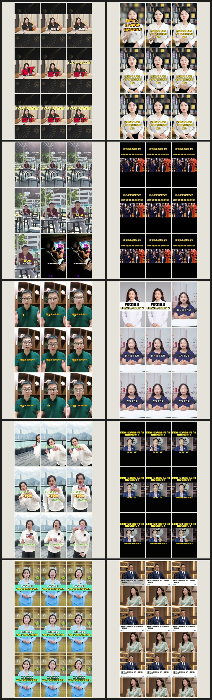

本阶段从494条相关内容中识别294位创作者，完成32个保险个人IP市场扫描，并对8个指定账号的239张主页封面和25条代表视频进行深度拆解。研究显示，保险市场以固定口播为主，同时满足账号规模、视觉质量与稳定复用的母版仍然稀缺。研究流程现已统一为粉丝量级筛选、主页至少3次复现、动态视频验收和85分准入。下一阶段重点是建立8–12套标杆母版，并进入内部IP真实拍摄验证。
494保险相关内容结果
294发现创作者
58主页身份核验
1,377累计处理封面记录
17视频完整动态拆解
00 / 执行摘要
阶段成果与下一步判断
01 / 研究目标
从账号参考升级为可复制的视觉标准
账号是证据来源，研究成果需直接支持场景选择、灯光、人物位置、镜头和制作方式。
非核心交付
头部账号名单
粉丝规模不代表视觉质量；单条优质视频不代表账号具有稳定系统；同一场景也无法适配所有人物。
核心交付
保险个人IP视觉决策系统
持续发现优质画面，验证其成立条件与复制能力，再将母版匹配给不同人物IP并进入真实拍摄测试。
02 / 阶段成果
研究分为四个阶段，分别解决不同问题
四个阶段分别覆盖市场全貌、账号母版、质量判断与持续发现；样本规模不直接等同于优质母版。

PHASE 01市场普查
保险行业30+个人IP
16个主题、494条内容结果、294位创作者、58个主页核验，最终保留32个保险个人IP和922张封面。
解决：市场上谁在做、目前大致怎么呈现。打开完整报告 → PHASE 02
PHASE 02账号深拆
8个指定IP内部版式
239张主页封面、25条代表视频、17条逐镜头动态分析，覆盖场景、光线、构图、字幕、插图与动效。
解决：一个IP内部有哪些母版、母版如何重复。打开完整报告 → PHASE 03
PHASE 03标准建立
什么是好的版面
形成四类信任原型、100分评分表、85分准入线和四项一票否决，从颜色分类上升到人物与场景匹配。
解决：以统一标准替代主观审美判断。打开完整报告 → PHASE 04
PHASE 04持续监测
每日视觉监测归档
两日135条搜索结果、13个主页／系列复查、3条动态核验，正式标杆仍为0个。
解决：检验标准能否防止为满足数量而降低标杆质量。打开监测归档 →样本适用边界
8个指定IP中，谢员外达到新的跨行业核心门槛，董可人接近50万；其余账号用于版式研究，不直接列为头部标杆。
阶段研究价值
指定样本支持了母版结构、动态字幕与场景差异研究，并推动筛选标准由账号罗列升级为双门槛与动态验收。
03 / 研究方法
所有候选账号统一经过六步证据链
搜索热度与粉丝量用于判断研究优先级，视觉质量仍需通过主页复现与动态视频验证。
内容发现
按账号主页主要讲述的方向搜索，不依赖名字关键词。
身份与量级
排除公司号、搬运号；保险≥30万，跨行业≥50万。
视觉盲筛
暂时忽略观点、标题和互动量，只看人物、场景、构图、光色。
主页复现
最近约30条作品中，同一母版至少重复出现3次。
动态核验
下载代表视频，检查转头、手势、对焦、曝光、动效与比例。
评分入库
100分量表，85分以上才进入正式标杆母版池。
保险个人IP ≥30万50万以上列核心头部
其他专业IP ≥50万100万以上列核心头部
主页母版 ≥3次排除一条偶发精修
视觉评分 ≥85没有合格就零新增
04 / 判断标准
优质画面的核心，是建立与人物定位一致的信任
好版面 = 人物可信 × 场景作证 × 构图聚焦 × 光色统一 × 长期复制

A / AUTHORITY
权威编辑型
有阅历、有判断、说话有分量。适合强观点和资深人物。

B / WARMTH
温暖陪伴型
愿意听、能陪伴、能把复杂问题讲清楚。

C / STATUS
资源身份型
城市、圈层和视野本身就是能力证据。

D / CLARITY
理性分析型
信息清楚、判断克制、没有多余表演。
| 评分维度 | 分值 | 核心问题 |
|---|---|---|
| 人物与IP匹配 | 20 | 场景是否强化人物身份与可信度？ |
| 人物视觉中心 | 15 | 第一眼是否先看到脸与状态？ |
| 构图与姿态 | 15 | 眼位、肩线、留白和手势是否稳定？ |
| 光线与肤色 | 15 | 面部是否真实、有轮廓、有眼神光？ |
| 场景证据与层次 | 15 | 空间是否提供身份线索且不抢人？ |
| 颜色与服装关系 | 10 | 人物能否从背景中分离？ |
| 动态稳定 | 5 | 人物运动时曝光、对焦与构图是否稳定？ |
| 长期复制 | 5 | 该画面能否支持连续内容生产？ |
85–100进入标杆母版池
75–84可用，但需要修正
0–74不作为对标
05 / 市场结论
保险市场的九种呈现方式已经可以被看成一张地图
它们不是九种好模板。当前市场大量集中在低成本固定口播，真正稀缺的是场景、行动和人物身份同时成立的母版。
固定棚拍口播
生产稳定，但易出现画面扁平与表达同质化。
办公室顾问型
用办公桌、会客区和书房证明职业身份。
访谈／播客型
层次更好，但横竖屏适配是常见问题。
大屏／白板讲解
解释效率高，需避免图表弱化人物主体。
证据图解型
保单、报告、数据和新闻截图辅助说明。
商务纪录片型
办公、会谈、出差与演讲能够强化专业影响力。
生活场景口播
家、咖啡厅、汽车和户外增强真实感。
故事／角色演绎
变化丰富，但制作与母版稳定性要求更高。
直播切片／AI／卡片
常见生产方式，不默认等于好版面。
06 / 视频证据
静态封面不能替代动态验收
同一个画面在主页封面、人物动作和实际播放比例中可能是三个不同结果。
GOOD SIGNAL
动作不破坏画面秩序
手势集中在身体中段，人物始终是第一视觉中心，场景层次没有因动作失控。
STYLE CASE
指定账号的可复用版式
固定中景、灰蓝柔光、侧边身份栏与动态字幕形成完整母版；它是版式案例，不自动等于头部标杆。
NEAR MISS / 83
封面质量较高，播放比例仍然失分
暖木访谈、人物和灯光都稳定，但16:9横屏在抖音竖屏环境中有效面积不足，因此没有进入85分标杆池。
07 / 核心结论
阶段研究形成六项核心结论
粉丝量是成熟度门槛，不是审美分
大账号可能视觉普通，小账号也可能偶发拍得漂亮；两者都不能越过主页和动态核验。
单条优质画面不等于稳定母版
稳定母版必须在主页重复至少3次，并能在人物动作中保持质量。
应该叫“场景”，不是“背景”
场景承担身份和关系证明；只负责装饰的漂亮房间，对IP没有真正价值。
判断顺序决定结果
人物 ＞ 状态 ＞ 场景证据 ＞ 装饰细节。先看见家具或城市，画面主次就反了。
封面与视频必须分开验收
封面裁切、播放比例、字幕动效和手势都会改变实际观看体验。
零新增同样构成有效结论
首日监测0新增，说明85分准入线发挥了筛选作用，避免低质量样本进入标杆池。
08 / 当前状态
基础研究框架已建立，标杆母版仍需实拍验证
已经可靠
- 保险个人IP的市场发现方式
- 个人IP与公司账号的区分规则
- 粉丝量双门槛与主页复现要求
- 好画面的100分验收标准
- 九类市场呈现方式与四类信任原型
- 封面、主页和动态视频的证据链
仍需继续验证
- 真正达到85分的保险头部母版数量仍不足
- 跨行业标杆如何迁移到保险场景，需要人物匹配
- 每个内部IP适合哪种信任原型尚未完成
- 灯光和机位参数还需要真实拍摄校准
- 画面优化是否提升停留与完播，需要发布数据验证
09 / 下一步
未来30天：从研究报告走向可拍摄母版
持续采集是研究输入，阶段成果需沉淀为制作团队可直接执行的视觉规范。
补齐标杆池
保险≥30万、跨行业≥50万；每天约50条初筛，主页复查5–8个，不设强制入库数量。
形成母版库
目标沉淀首批8–12套85分以上母版，覆盖办公室、竖版访谈、纪录片和生活场景。
匹配内部IP
按权威、陪伴、资源、理性四类信任方式，为每个人选1套主母版和1套补充母版。
拍摄与验证
选择2–3个IP试拍，固定机位、灯光、人物比例和场景层次，再用发布数据复盘。
每日
搜索约50条 → 视觉盲筛 → 粉丝门槛 → 主页复查。允许当天0新增。
每周
汇总新增母版、近线案例和淘汰原因，更新九类市场地图与评分基线。
每月
输出标杆库版本、内部IP匹配表、拍摄规范和发布后的画面数据复盘。
10 / 最终交付
下一阶段形成四类可直接推动生产的成果
11 / 管理层决策
下一阶段需确认三项标准与资源
推进建议
建议进入下一阶段，研究目标由扩大账号样本转为建成首批可拍摄母版并完成内部验证。核心成果由名单数量调整为母版质量与真实拍摄复现能力。
确认标准同意30万／50万粉丝门槛、主页3次复现和85分入库线。
确定试拍人物选择2–3个内部IP，明确其年龄、职业阶段与目标信任感。
提供最小制作资源场地、灯光、摄影与服装配合，用一轮试拍把标准落到真实画面。
12 / 证据入口